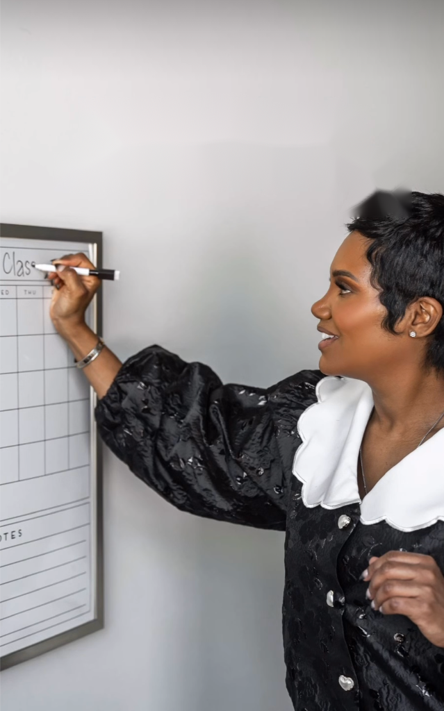
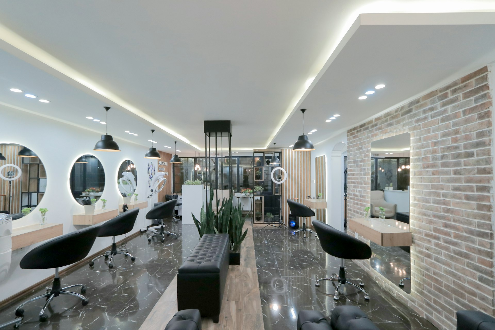

8KIG Community
25+Years Experience
48%Stylists Self-Employed
4Stages to CEO
Precision cut.
Precision books.
The same discipline that makes a fade clean makes a P&L readable. Both are taught here.

The Operating System
Four stages. One path from chair to CEO.
01
Artist
Master the chair. Read your real numbers — what you earn, keep and lose per client.
→
02
Operator
Price for profit. Rebooking systems. Run the chair like the business it is.
→
03
Owner
Lease, first hire, payroll and margin standards that keep the doors open.
→
04
CEO
Scale beyond your own chair. Step back without it falling apart.
FOUNDER, UNCUT
Stop consuming.
Start implementing.
Direct. Recorded once. Still correct.
The Proof
Systems photographed mid-work.



What people say
"10 out of 10. Highly recommend. She came focused and ready to learn, determined to perfect her mold — and by the end, she surprised herself with how quickly it all came together."
Short Hair, Big Confidence workshop
"They drove 5 hours from Maryland for this. Lisa and her 12-year-old daughter Summer came ready to learn — and left with clarity. Hearing Lisa say, 'I learned what I've been doing wrong,' was the real breakthrough."
Workshop testimonial
"A full schedule can hide a weak business. If your prices don't properly cover your time, products and expenses — you are busy, but you are not profitable."
Bigger Than Shears™

Signal over noise.
Take the Owner Readiness Score — 12 questions, your stage, the fix.
Take the Score